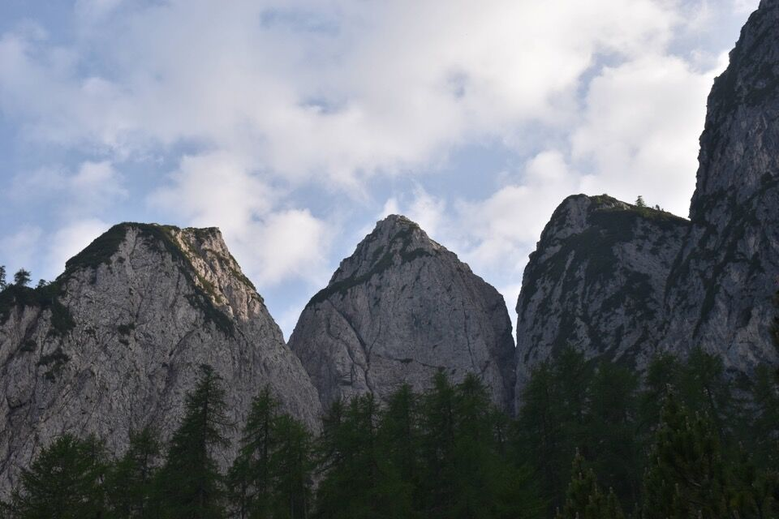
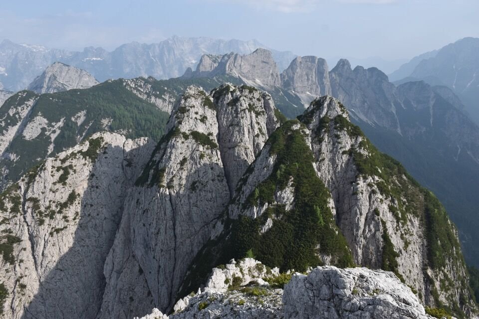
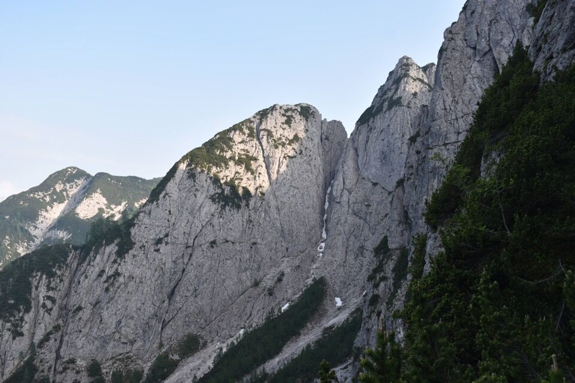
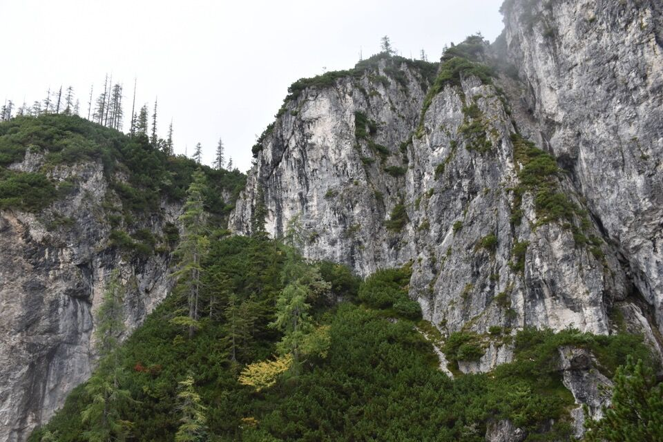
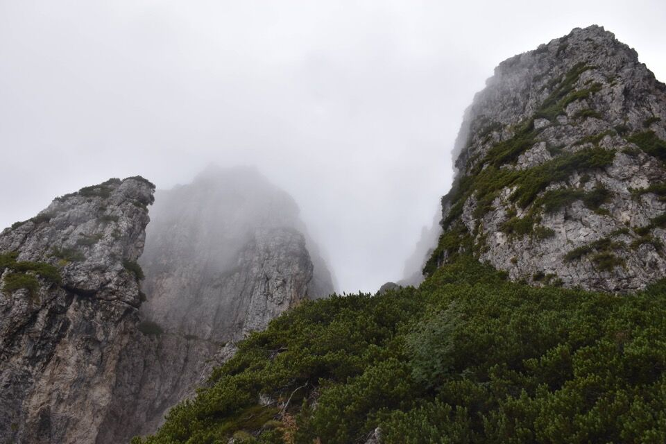
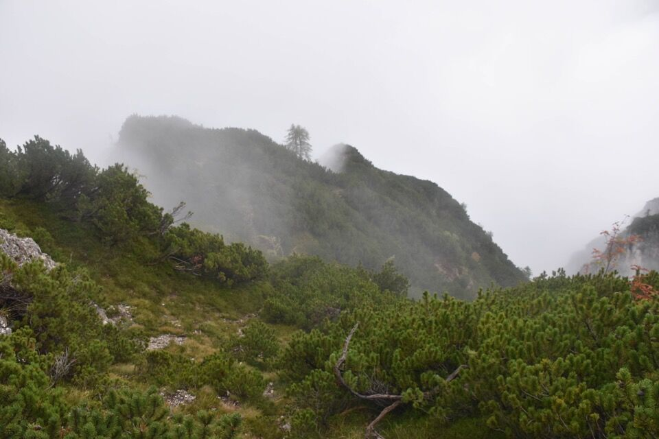
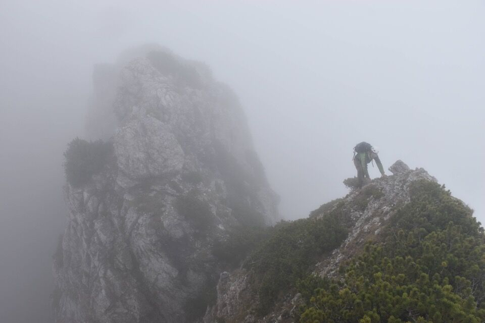

Dall'Alpe di Rutte — quel luogo ameno ove sorge la Capanna Cinque Punte — si distinguono nettamente (da dx a sx) la III, IV e ... V? Eh no! Quella cima a sx è la q1843.1. Da qui non si può vedere la V.
Quella quota la si vede bene pure dalla I e II punta, più bassa e a sx della IV. Anche da qui la V è nascosta dalla IV.
Non ci vuole molto a convincersi che la q1843.1 non può essere la V, dato che quella quota non la si può vedere dal versante di Raibl.
Ho evidenziato la q1843.1, la V (q1848.7) e la IV (q1883.4). Qualche pignolo potrebbe contestare che la IV dovrebbe essere la q1884.9 e la V la q1850.8, perché di pochi metri più alte. Per me sono dettagli futili, e io mi sono limitato ad indicare le cime che si vedono dal paese di Raibl. Distinguere le sotto-cime può avere importanza solo dal punto di vista alpinistico (e in questo caso non ha importanza secondo me), ed è meglio attenersi al Rasoio di Occam.
Secondo me non possono esserci dubbi, per un motivo molto semplice: il monte «Cinque Punte» si chiama così per via dell'aspetto che assume da Raibl, e le varie Punte sono quelle che si vedono da qui. Mi pare anche superfluo doverlo esplicitare.
La V, tutto a dx, ha una cima vera e propria rocciosa (q1848.7) e una antecima più bassa e mugosa (q1811.4).
La «finta V», ovvero la q1843.1, è raggiungibile senza difficoltà (benché sia pieno di mughi) sia per cresta nord-est dalla Capanna Cinque Punte, sia da sud-ovest dalla Sella della Malga.
Dal bel sentiero che scende dalla Sella della Malga verso Raibl si distinguono nettamente la V, che qui appare poderosa, dalla q1843.1 che cade con pareti a picco verso la V. Quindi una volta arrivati sulla q1843.1 non c'è modo di proseguire (a meno di una lunga calata).
Da notare che dalla minuscola forcelletta fra IV e q1843.1 (o meglio la sua spalla q1831.2) originano due canali: uno impercorribile verso sud (il quale cade nel Canal Bosconero), l'altro verso nord, molto stretto ma risalibile con qualche non-insormontabile difficoltà alpinistica. Il povero Philipp Steiner (✝, vedi qui) era salito dal canale nord alla detta forcelletta; da lì su per non facile parete di III fino all'altezza della forcella q1831.4 fra IV e V, da cui facilmente si sale in cima alla IV. So però che la IV è raggiungibile più facilmente dal canale nord fra III e IV.
***
E comunque, noi escursionisti non ci si accontenta di guardare e studiare i monti: dobbiamo andarci fisicamente.
Martin ha iniziato lo scorso anno ad esplorare e tagliare mughi nella parte bassa del Lärchköpfe, costone molto impervio e selvaggio, con diversi intagli difficili che sfuggono pure all'acribia della carta al 5000.
Fra IV e V.
 V. Non è sempre domenica.
Attenderemo giorni più degni per salire anche la IV che pur era a portata di mano, e per mettere nuove foto.